Remote Access to GWU Computing Labs from macOS computers
Referencing the content in this webpage:
Bulusu, Kartik V. (2026, October 17). Introduction to Mechanical and Aerospace Engineering [Course lecture notes, codes and presentations]. Department of Mechanical and Aerospace Engineering, The George Washington University.
Introduction
This guide will take you through the step-by-step process of how to remotely access GWU Computing Labs from your MacOS system.
Prerequisites
Before you start, make sure you have the following:
- A macOS computer.
- An active internet connection.
- Adequate disk space for the installation.
Installation Steps
1. Connect to the GW VPN.
Note: Go to GWU VPN installation instructions page for the instructions on how to install GWU VPN client.
2. Install “Windows App”” for macOS
Click the “Open App Store” pop up by clicking this Link
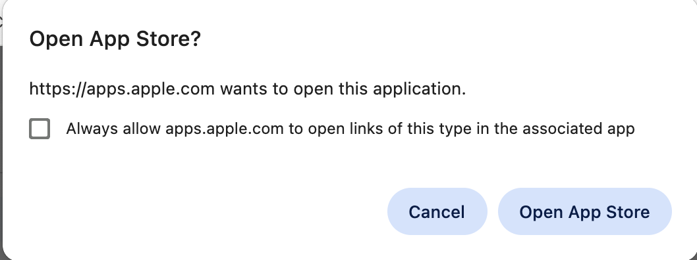
3. Download and install the Windows App
Download and install the Windows App, and grant permission to the Windows App
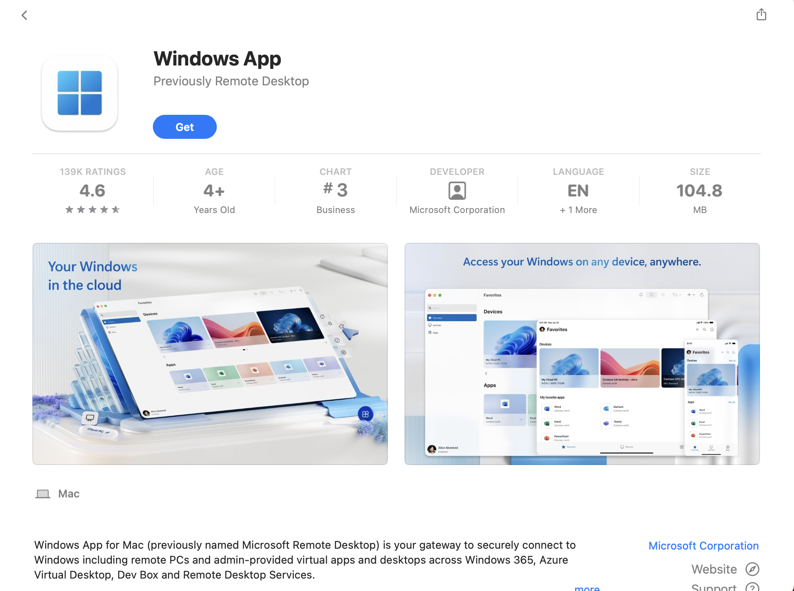
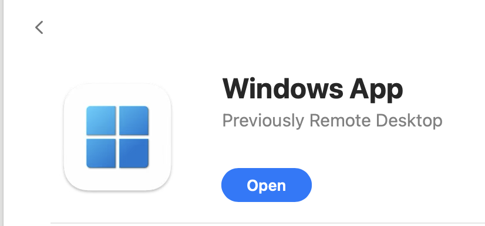
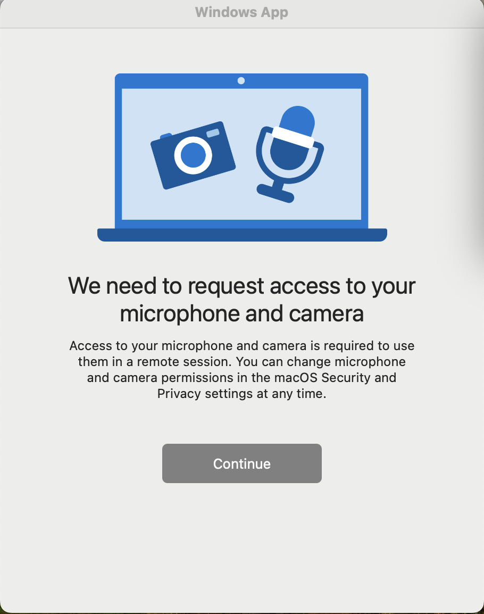
4. Type the software you are looking for (for example, Solidworks, MATLAB etc) and Locate a GWU Computing Lab on the map
Visit this link. Type in the search bar the software you want to work on. Select a building you would like to use.
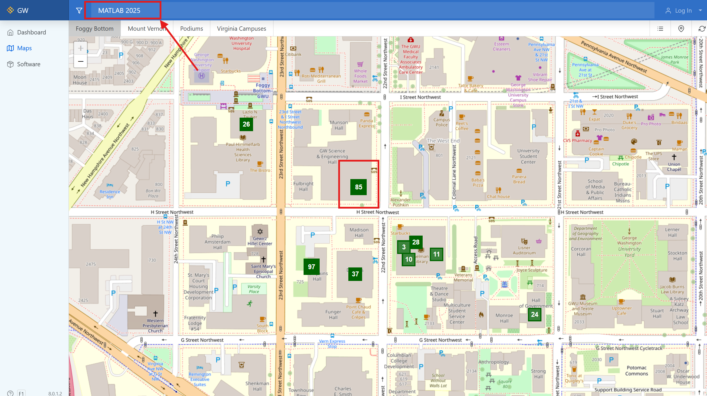
5. Click on the lab you would like to use.
It will open up a browser to that lab, with the layout of the lab. Green indicates Available to Connect. Blue indicates Turned Off. Red indicates In Use.
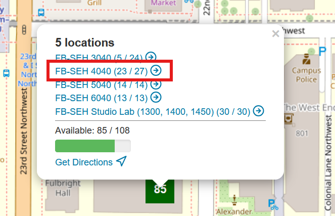
6. Click on a computer that is available
In this step you will have to Connect to the computer and download the client software as shown in the images below.
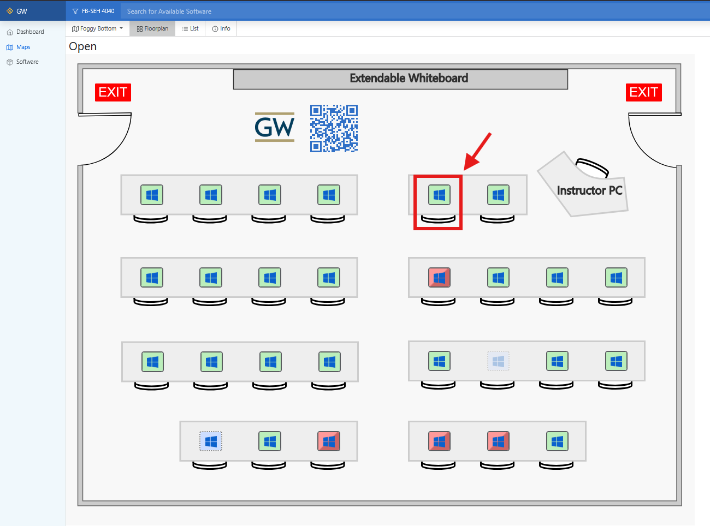
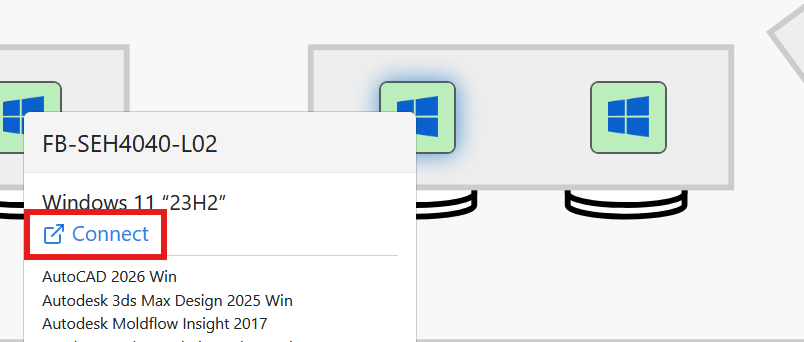
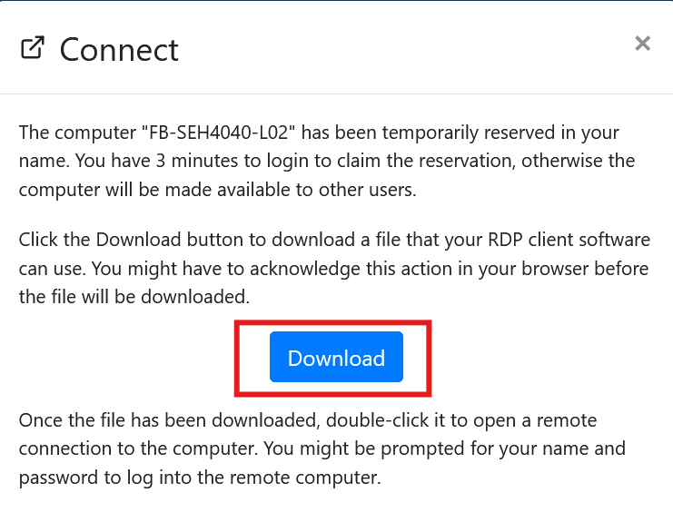
7. Open the downloaded software.
It is usually saved in the ‘Downloads’ folder.
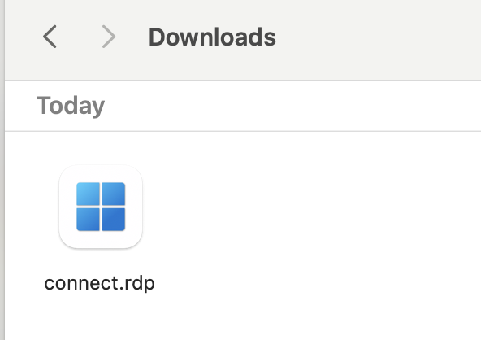
8. Continue with the application
Your Antivirus might pop up to verify this application. Since you know this computer is managed by the SEAS Computing Facility team, Click connect to Continue. Enter your GW login credentials. If certificate errors pop up, click ‘Yes’ to continue connecting to the remote desktop.
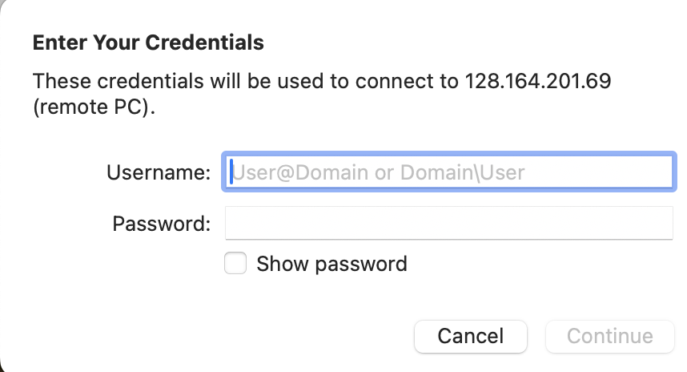
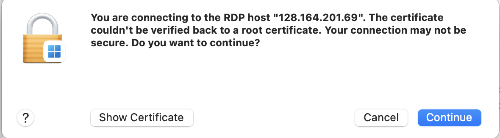
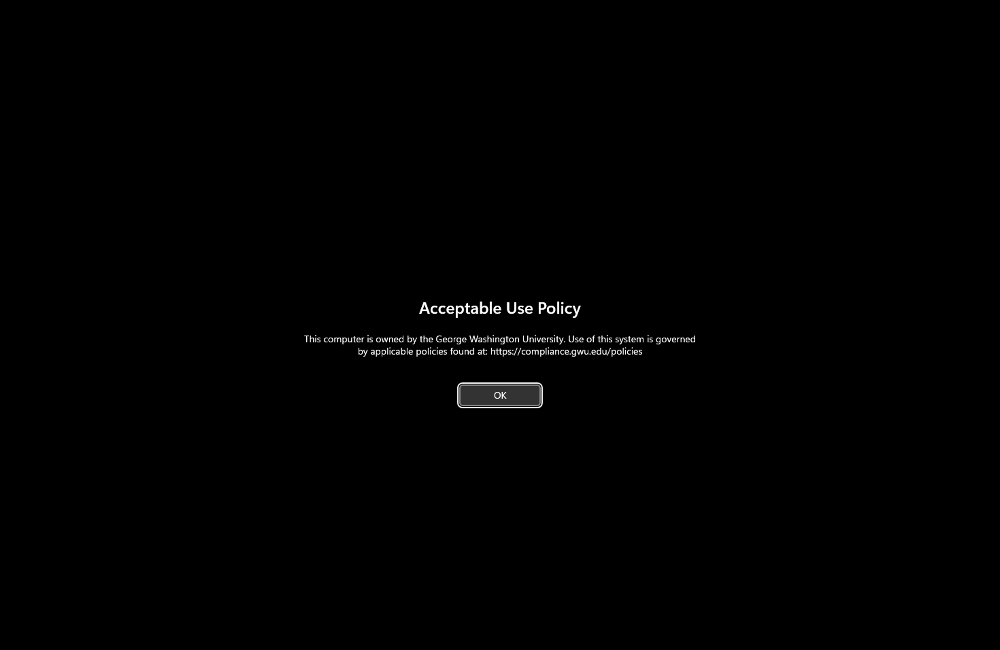
Conclusion
You will be automatically logged into the remote computer and will see your desktop being set up. Please wait for one minute while your desktop loads.
Congratulations! You have now successfully logged in remotely to a GWU Computing lab computer.